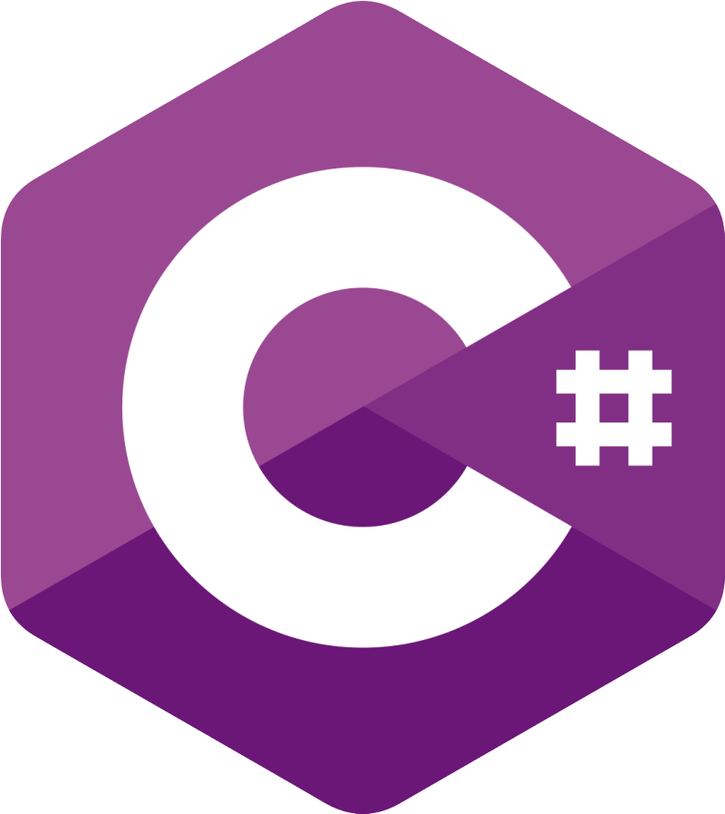

History
C# was designed at Microsoft in 2000 by Anders Hejlsberg, and released publicly in 2002.
Features
C# is a statically typed, object-oriented programming language that runs on the .NET framework.
Uses
C# is popular for building Windows applications, web applications, and mobile applications.
It is also used in game development with the Unity engine.